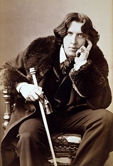

Oscar Fingal O'Flahertie Wills Wilde
borned in Dublin, Ireland
died in Paris, France
Was an Irish poet and playwright. Was born in Dublin, Irland
The most popular playwrights in London in the early 1890s.
And the most famos novel of him is "The pecture of Dorian Grey"

Oscar Wilde
(16 oct 1854 -
30 nov 1900)
aged 46
30 nov 1900)
aged 46